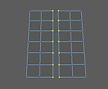
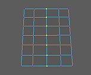
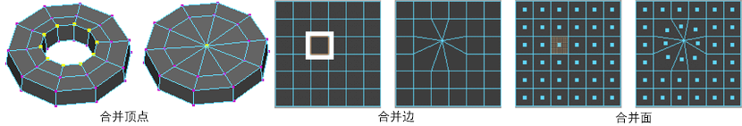

使用和命令，可以合并预先选择的顶点。前者适用于合并非常接近或重叠的组件（如同将多边形网格合并到镜像副本），而后者适用于填充洞或创建点。
注： 在合并顶点时，会同时合并相应的 UV。在某些情况下，UV 无法合并。例如，分离壳上的 UV 必须手动合并。（在“UV 纹理编辑器”(UV Texture Editor)中选择编辑 UV > 合并 UV(Edit UVs > Merge UVs)。）
同时合并多个顶点
- 选择要合并的顶点。

- 执行下列操作之一：
- 从主菜单栏中，选择“编辑网格 > 合并”(Edit Mesh > Merge) >
 。
。
- 从顶点(Vertex)标记菜单中，选择“合并顶点 > 合并顶点”(Merge Vertices > Merge Vertices) >
。
- 从主菜单栏中，选择“编辑网格 > 合并”(Edit Mesh > Merge) >
- 在“合并顶点选项”(Merge Vertices options)窗口中，调整“阈值”(Threshold)。
- 单击“合并”(Merge)。
如果选定顶点之间的距离小于“阈值”(Threshold)值，则它们将被合并。
注： 合并顶点后可将几何体设置为非流形。使用修复非流形几何体。 - 在显示的视图中编辑器中，调整 polySewEdge 节点属性。
将边或面合并为单个顶点
- 选择要合并到中心点的顶点或者毗邻这些顶点的边或面。
注： 只能合并属于同一多边形网格的边。如果要合并不同网格对象的边，必须首先结合（）这些对象。
- 从主菜单栏中，选择。
